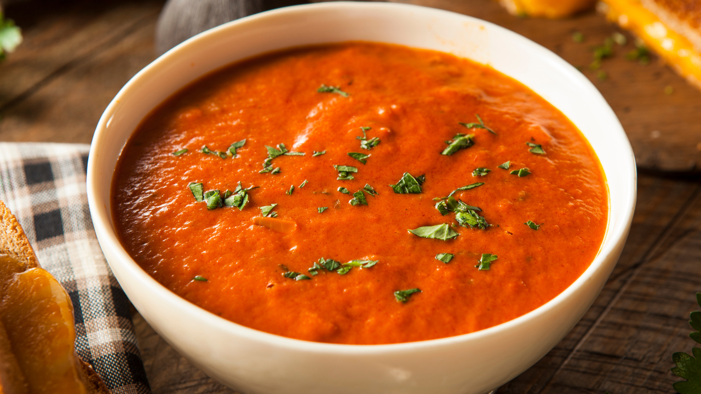

Classic Tomato Soup
Prep time:
10 mins
Yield:
4
Ingredients
2 tablespoons olive oil
1 small onion, chopped
2 garlic cloves, minced
4 cups canned diced tomatoes
2 cups vegetable broth
1 teaspoon sugar
1/2 teaspoon salt
1/4 teaspoon black pepper
Steps
Heat olive oil in a pot over medium heat. Sauté onion and garlic until soft, about 5 minutes.
Add diced tomatoes, vegetable broth, sugar, salt, and pepper. Bring to a boil, then reduce heat and simmer for 15 minutes.
Use an immersion blender to purée until smooth. Serve hot.